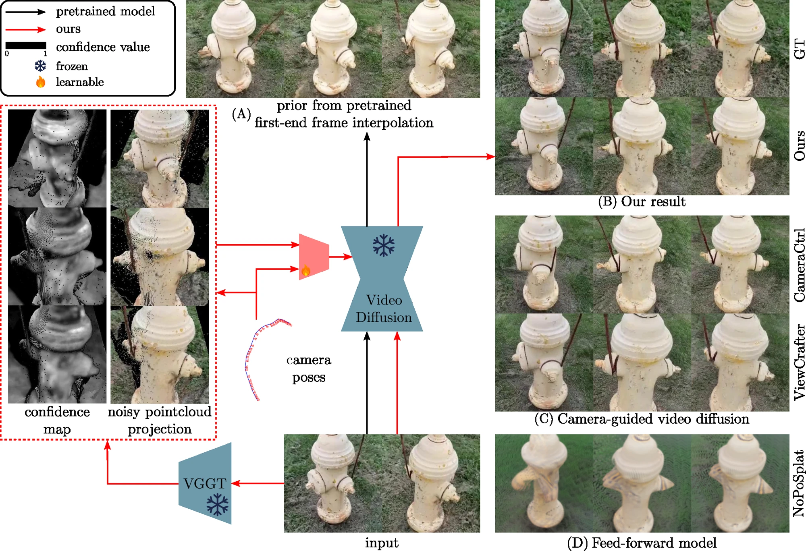
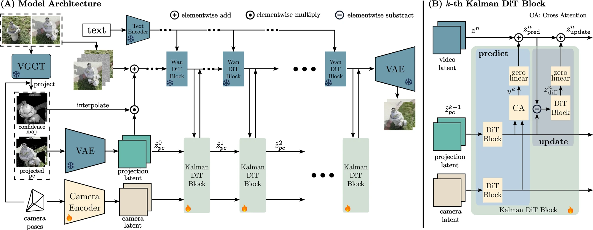
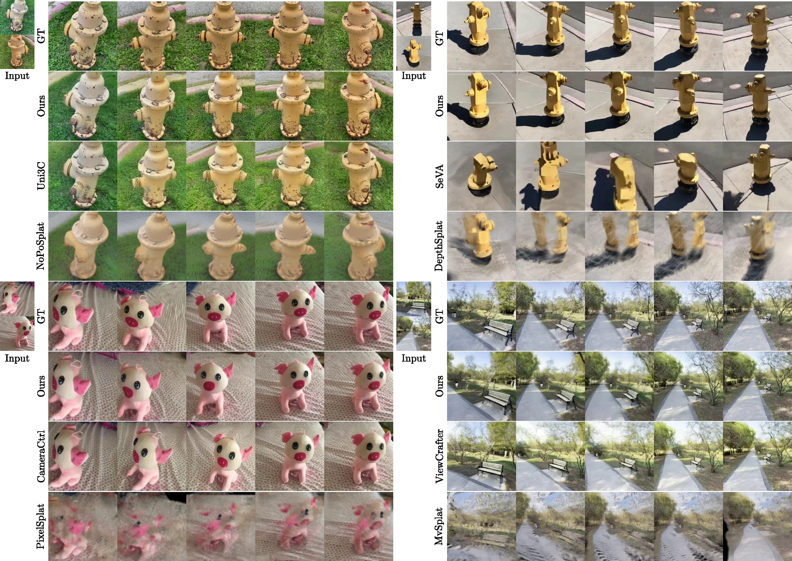
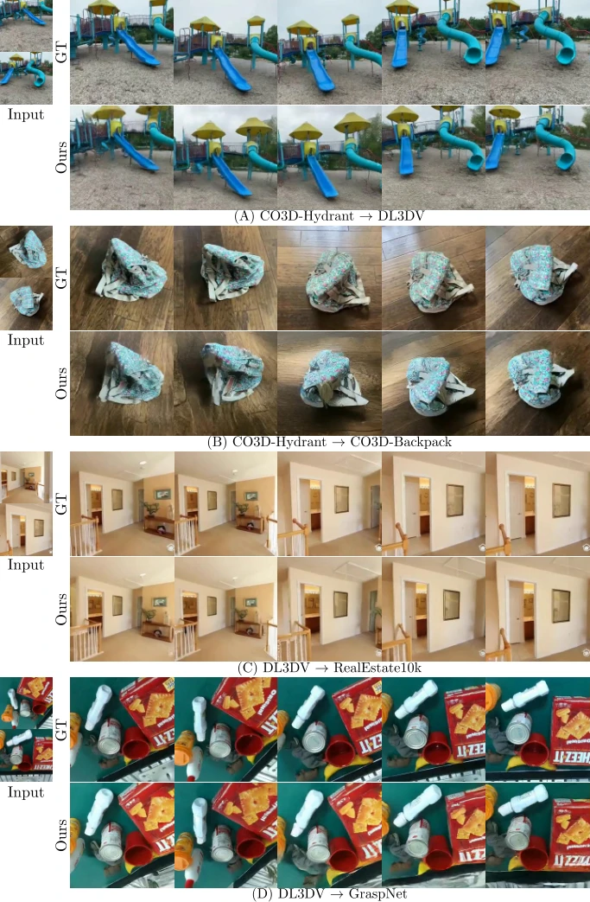
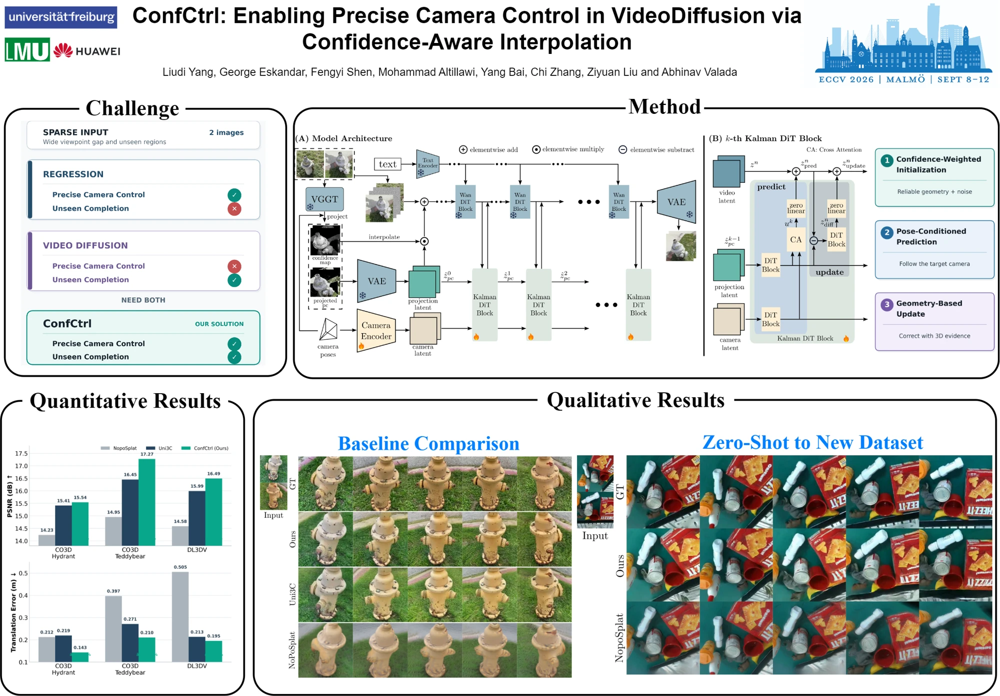

ECCV 2026
ConfCtrl: Enabling Precise Camera Control in Video Diffusion via Confidence-Aware Interpolation
1 University of Freiburg2 Ludwig Maximilian University of Munich3 Technical University of Munich4 Huawei Heisenberg Research Center5 Munich Center for Machine Learning (MCML)
Two input views. A prescribed camera path. Geometrically consistent novel views.
Abstract
We address the challenge of novel view synthesis from only two input images under large viewpoint changes. Existing regression-based methods lack the capacity to reconstruct unseen regions, while camera-guided diffusion models often deviate from intended trajectories due to noisy point cloud projections or insufficient conditioning from camera poses. To address these issues, we propose ConfCtrl, a confidence-aware video interpolation framework that enables diffusion models to follow prescribed camera poses while completing unseen regions. ConfCtrl initializes the diffusion process by combining a confidence-weighted projected point cloud latent with noise as the conditioning input. It then applies a Kalman-inspired predict–update mechanism, treating the projected point cloud as a noisy measurement and using learned residual corrections to balance pose-driven predictions with noisy geometric observations. This allows the model to rely on reliable projections while down-weighting uncertain regions, yielding stable, geometry-aware generation. Experiments on multiple datasets show that ConfCtrl produces geometrically consistent and visually plausible novel views, effectively reconstructing occluded regions under large viewpoint changes.
Precise camera control from two views
Combining the completion ability of video diffusion with explicit geometric guidance.

Method
Trust reliable geometry. Refine uncertain projections.

01 · Initialize
Combine a confidence-weighted projected point cloud latent with noise to adapt video interpolation to novel view synthesis.
02 · Predict
Condition the latent state on the target camera pose to guide generation along the prescribed trajectory.
03 · Update
Use projected geometry as a noisy measurement, learning residual corrections that reduce the influence of uncertain regions.
Qualitative results
Explore the comparisons and generalization examples.


Video results
Example sequences from the supplied research material.
Poster

BibTeX
@inproceedings{yang2026confctrl,
title={ConfCtrl: Enabling Precise Camera Control in Video
Diffusion via Confidence-Aware Interpolation},
author={Yang, Liudi and Eskandar, George and Shen, Fengyi
and Altillawi, Mohammad and Bai, Yang and Zhang, Chi
and Liu, Ziyuan and Valada, Abhinav},
booktitle={Computer Vision -- ECCV 2026},
year={2026},
publisher={Springer Nature Switzerland},
doi={10.1007/978-3-032-37026-6_11}
}